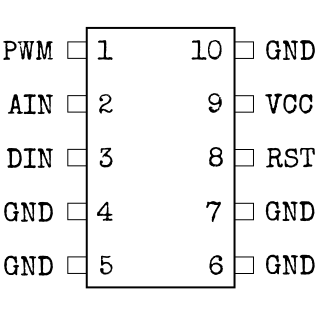
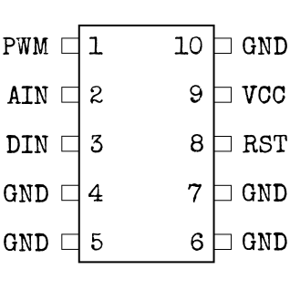

モジュール詳細：マイクロコントローラー
「マイクロ」とはいったものの、かなり大きい。おそらく大きい爆発を引き起こすからだろう。
- タイプ名とマイクロコントローラの大きさを使用して以下の図に該当するものを調べる。
- 白いマークと隣接しているピンがピン1である。そのピンから同じ辺のピンは昇順に番号付けされており、反対側のピンは逆向きに続いて番号付けされている。
- 以下の表を使用し、各ピンの正しい色を特定する。
- 上下ボタンでピンに割り当てられる色を変更し、正しい色に設定して「OK」を押す。次のピンは自動的に選択される。
ピンの配置
alt+左クリックでハイライト出来るStrike (STRK)


Diode (LEDS)

 

Countdown (CNTD)